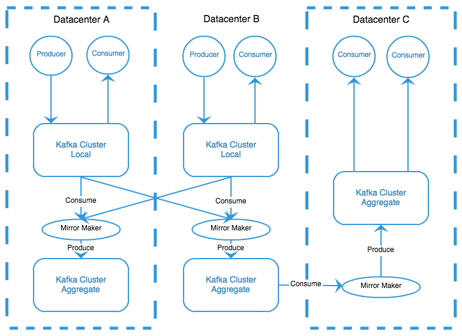
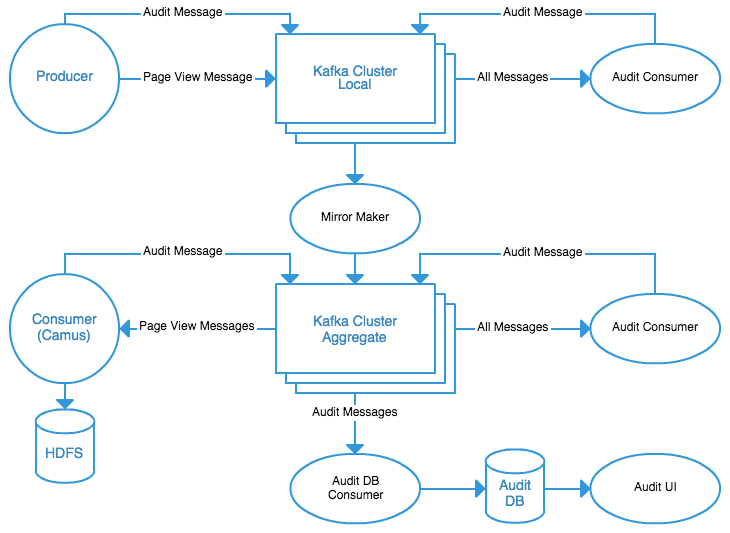
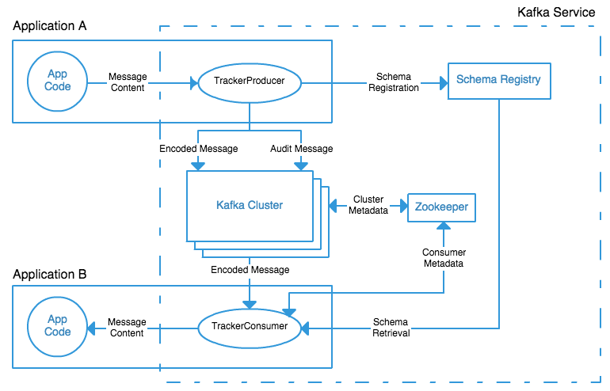

英文原文： Running Kafka At Scale by Todd Palino, Staff Engineer, Site Reliability.
中文翻译： LinkedIn —— Apache Kafka 的伸缩扩展能力 by 袁不语, 社会主义好, 无若, 开心613, fr000, Shawock.
我在转载时根据原文对译文有所改动。
如果数据是高科技的血脉的话，Apache Kafka 就是 LinkedIn 公司正在使用中的心脏系统。我们使用 Kafka 在多个系统之间传递各类数据，它几乎每一天都和各种服务器打交道。这个架构的复杂性，以及架构实践中采用的各种取舍，衍生出一种快速又可靠地传输的大块数据需求。
Kafka是什么？
Apache Kafka 是一个综合的发布/订阅消息系统。它结合了队列机制和可以保存到硬盘上的消息，可把它当成在一群服务器间进行的日志提交过程。消息被分成多个主题和分区，每个主题支持多个发布者（生产者）和多个订阅者（消费者）。Kafka集群很好地为主题维护着消息。
- 可以保留一定的时间的消息（LinkedIn保留数天的消息）
- 可以设定分区保留一定数量的消息
- 根据消息的键值，仅存储每个键值最近的一定数量的消息
Kafka 提供可靠性、弹性和持久化，同时高吞吐量地处理数据。
已有很多关于 Kafka 的文章和演讲，包括 a talk given at ApacheCon 2014 by Clark Haskins 和我自己的。如果你还不熟悉Kafka，你可能需要去查看这些链接来学习一些Kafka的基本操作原理。
多大算大？
Kafka 是不关心消息中的内容的。许多不同类型的数据可以在一样的集群上被简单的共存，每一种的数据会被分类成不同的主题。生产者和消费者仅仅需要关心他们感兴趣的内容。LinkedIn让这更进一步，并且定义了四种类别的消息：队列，度量metrics，日志和追踪数据，每一类都运行在他们自己的集群上。
一起统计的话，在 LinkedIn 的 Kafka 的系统上，每天有超过 8000亿条消息被发送，相当于超过 175 TByte 数据，另外，每天还会消耗掉 650 TByte 数据的消息。 因此Kafka为每个主题处理多个生产者和消费者的能力是非常重要的。在每天系统最繁忙的时候，我们每秒接收超过 1300万条消息，相当于每秒 2.75 GByte 数据。去处理这所有的信息，LinkedIn 运行超过 60 个集群，并在上面部署超过 1100 个 Kafka 节点(broker)。
队列
队列 是大多数人所想的那种标准信息类型：一个应用程序的一部分功能负责生成消息，另一部分则消费消息。其它应用对这些消息不感兴趣，因为他们是用于协调动作或是单个系统的状态的。这种类型的消息用于发送邮件，分发由其他在线应用计算出的数据集，或者与后端组件配合工作。
度量(Metric)
度量 处理所有由应用在操作过程中产生的测量值。这包括所有与此应用相关的操作系统和硬件的统计数据，监控这些数据能够确保系统正确运作。这是LinkedIn的耳目，用它能够看到所有服务器和应用的状态，驱动我们内部的监测预警系统。如果你想要对我们的度量了解更多，可以阅读我们的自动度量系统的原始设计， 也可以看Stephen Bisordi最近发表的 自动度量的下一步往哪走。
日志
日志包括应用程序日志、系统日志和公共访问日志。最初,为了方便,度量和日志共存于同一集群。现在由于日志量太大我们会不断地将日志数据分离出来。日志数据通过应用程序发送到Kafka,然后会被其他系统读取用以日志聚合(log aggregation )。
跟踪(Tracking)
跟踪包括了LinkedIn的基础架构前线中发生的所有行为，不管是用户的行为还是应用程序的行为。这些行为不仅需要与其他应用程序交互，也会进入到 Apache Samza的流处理和Apache Hadoop的批处理中。这正是大数据的立足之处:持续更新搜索索引,跟踪付费服务的使用以及实时测量大规模增长的趋势。这四种类型的消息机制对LinkedIn的正常运行至关重要,而跟踪数据则较为常见,因为执行层比较重视而且通常可以带来效益。
分层和聚合(Tiers and Aggregation)
与所有大型网站一样，LinkedIn需要管理大量的数据中心。一些应用，例如那些服务于特定用户请求的应用，它们只需要关心在一个数据中心发生了什么。还有许多其它应用，例如那些维持搜索目录的应用，它们需要检查所有的数据中心发生了什么。
对于每个消息目录，LinkedIn有一个创建在数据中心的名为本地消息容器的集群。它同样也是一个聚合集群，它将所有的本地集群的消息整合到一个给定的目录。我们使用Kafka镜像生成器应用来将本地消息复制到聚合集群，这样可以避免任何的本地集群之间的消息循环。

使用Kafka基础架构来移动数据可以减少带宽消耗和网络延迟，因为它可以让我们的消息复制次数最小化（每个数据中心一次）。用户可以在当地使用数据，这样就简化他们的配置并且让他们不需要再关心多种跨数据中心的网络问题。生产者和用户完成了Kafka基础架构中的分层概念。生产者是第一层，本地集群（结合所有的数据中心）是第二层，每个聚合集群都是一个额外的层级。用户本身是最后一层。
这种分层的基础架构解决了许多问题，但是极大地复杂化了Kafka的监控和保障它的正常运行。因为一个单一的Kafka集群正常运行时，是不会丢失消息的，当引入了额外的层之后，伴随着额外的组件加入，例如镜像生成器，当消息消失的时候会造成各种的故障，另外监视Kafka集群和它们的状况，我们需要一种手段来确保所有生成的消息都出现每一层，并且使它成为这些数据的关键用户。
审计完整性(Auditing Completeness)
Kafka Audit 是 LinkedIn 的一个内部工具，这个工具用来确保所有产生的消息无丢失的复制到每一层。消息结构包含一个所有消息共有的包含关键数据的头部，关键数据包括时间戳、生产服务和原始主机。当单个生产者发送消息到Kafka的时候，它会记录当前时间间隔发送消息的数量。然后它周期性的发送这个数量到特定的审计主题（topic）。这就提供了每个生产者向某个主题尝试发送消息量的信息。
我们的 Kafka 基础设施应用之一，被称做 Kafka Console Auditor，消费单个 Kafka 集群中所有主题的所有消息。它周期性的发送消息到审计主题，统计上一个时间间隔该集群中每个主题消费的消息量。通过比较这些数量和生产者的数量，我们就可以判断是否所有的生产的消息已经进入 Kakfa 系统。如果数量对不上，我们就能知道某个生产者有问题，然后就可以追踪故障的服务和主机。每个 Kafka 集群有自己的 console auditor，用于验证集群中的消息。通过互相比较每一层的数量，我们可以保证每一层具有相同数量的消息。这就可以保证既没有丢失也没用重复消息，如果有问题就能直接采取行动。

某些关键的消息消费者，比如Hadoop grids，也做为单独一层回写审计信息。这使得我们不仅可以监控生产者是否在工作，Kafka是否在传递消息，也可以检验消费者是否收到了所有消息。如果应用将消息从Kafka复制到hadoop出现了问题，那么Kafka审计工具将会显示一个错误，标明Hadoop使用的那一层的名字。这最后一块功能给我们提供了端到端的保证，也就是每条生产的数据最终会被消费。
将所有内容组合在一起
在简单的Kafka集群上面的这些层看起来很复杂——这给我们提出一个艰巨的任务，如何使LinkedIn的所有应用以相同的方式工作——但是我们有秘密王牌。LinkedIn有一个Kafka工程师团队，其中包括一些顶级的开源Kafka开发者。他们为LinkedIn开发社区提供内部支持，帮助内部团队以一致的、可维护的方式使用Kafka。对于任何想要知道如何实现生产者、消费者，或者深入了解Kafka的特定设计问题的人，他们是共同的交流沟通的团队。
Kafka 开发团队也为 LinkedIn 提供了其他好处，也就是在开源 Kafka 库之上的一系列自定义库，这些库可以将额外的功能连接在一起。例如，LinkedIn 内部的几乎所有 Kafka 消息生产者都使用了一个称为 TrackerProducer 的库。当应用调用该库发送消息的时候，这个库将会插入消息头部字段、注册消息结构，同时跟踪、发送审计消息。同样的，消费者库将会从注册服务拉取消息结构信息，反序列化 Avro 消息。大部分 Kafka 基础设施应用，比如 console auditor，也由该开发团队维护。

展望
就像 Mammad Zadeh，我们的技术总监， 最近说的， LinkedIn 对于 Kafka 的承诺如故。工程师团队在 Kafka 开源社区非常活跃。其中的工作包括强安全控制、配额控制，确保 LinkedIn 能够扩展到每天1万亿条消息，乃至更多。我们基于 Kafka 之上构建的流处理框架，Samza，最近已完成孵化，成为顶级项目。
SRE 团队正与工程师们一起工作，确保我们资深的运营经验可以与开发者的代码经验保持同步。SRE 团队也在持续自动化运行 Kafka 的流程，为诸如移动分片（partition）等任务构建工具，这将会集成到 Kafka 的组件中。我们也在持续的评估大规模运行 Kafka 的最佳调优策略，将我们的发现尽可能的告诉社区。
我们在 Apache Kafka 的邮件列表也很活跃，LinkedIn 很荣幸的主持着 Apache Kafka Meetup 和 Bay Area Samza Meetup，交替着每月一次。亲自参与会议，或者远程参加会议，来发现更多关于 LinkedIn 和其他公司使用 Kafka 和 Samza 的信息吧！